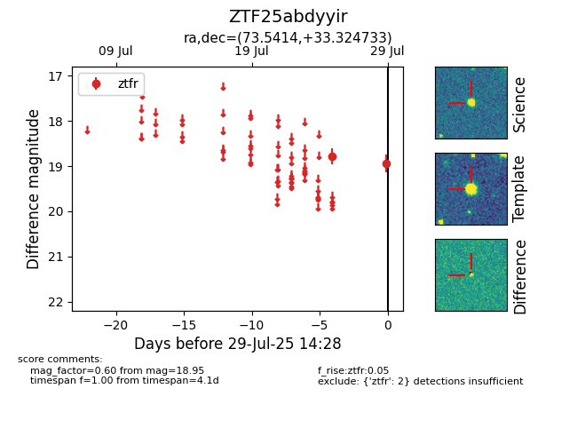

Target ZTF25abdyyir at 2025-07-29 14:28, see:
FINK: fink-portal.org/ZTF25abdyyir
Lasair: lasair-ztf.lsst.ac.uk/objects/ZTF25abdyyir
ALeRCE: alerce.online/object/ZTF25abdyyir
alt names
ZTF25abdyyir (ztf,fink)
coordinates:
equatorial (ra, dec) = (73.5414,+33.32473)
galactic (l, b) = (170.0952,-6.52422)
photometry
last ztfr=18.95
2 ztfr detections
